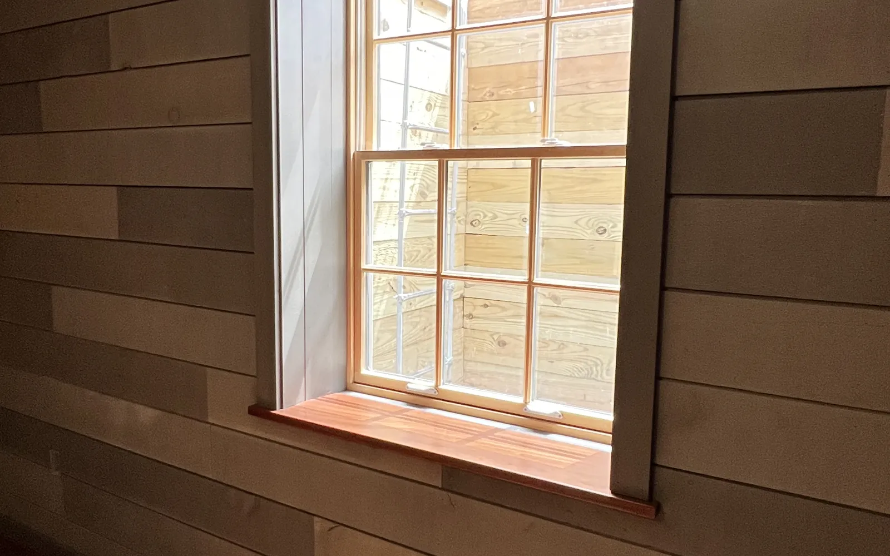
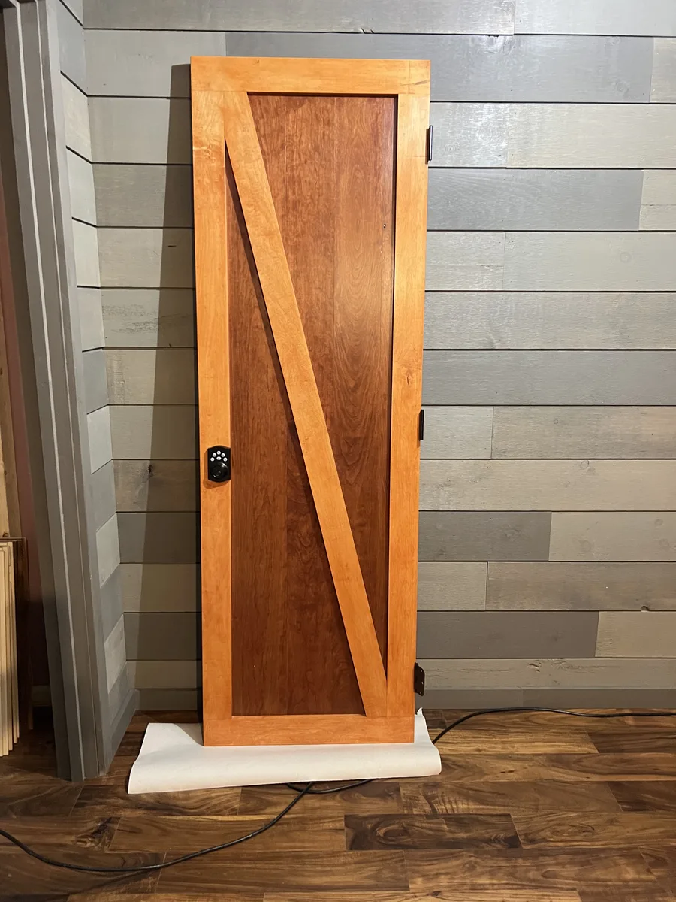
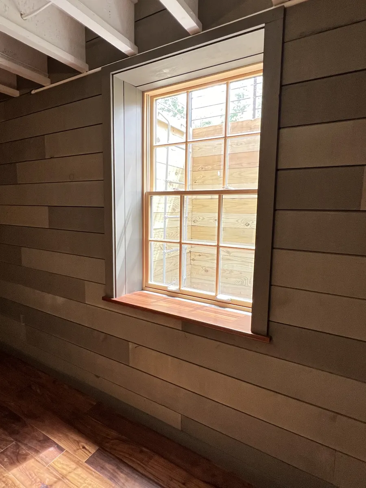
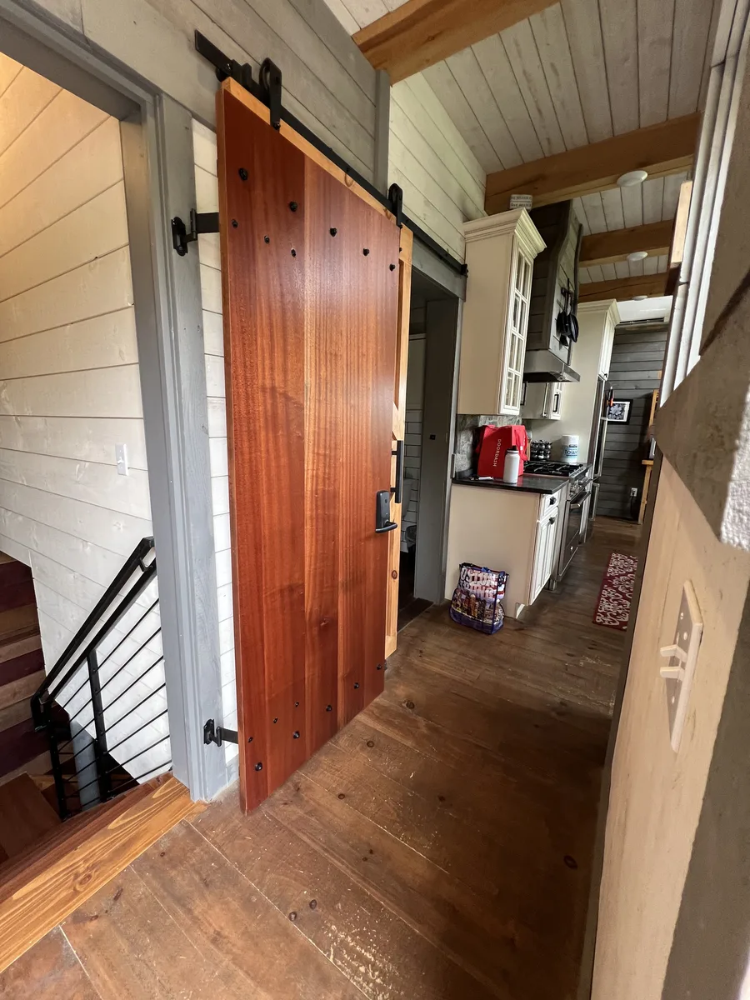

Finish carpentry in Massachusetts
Finish carpentry Massachusetts homes deserve: built-ins, trim and cabinets that fit
Finish carpentry from DeFaria Construction covers built-in bookcases and benches, window and door trim, wainscoting, custom doors and cabinet installation, scribed to the real walls of Essex and Middlesex County homes.
Our work
A custom piece built from the frame out
Watch a DeFaria built-in go from a raw frame on the bench to a finished, fluted island. Every piece of finish carpentry starts square and solid underneath.
Get a Free Estimate
The short answer
What is finish carpentry?

Finish carpentry is the woodwork you see and touch after the walls are closed: casing around windows and doors, baseboard and crown, built-in bookcases and benches, wainscoting and paneling, interior doors and cabinets. It is the last inch of a project, and it is where quality becomes obvious, because every gap, uneven reveal or wavy line is right at eye level.
- Built-in bookcases, window seats, mudroom benches and closets.
- Window and door casing, baseboard, crown and chair rail.
- Wainscoting, board and batten, shiplap and accent walls.
- Interior doors, barn doors and pocket doors.
- Kitchen, bathroom and laundry cabinet installation, including vanities.
DeFaria started as a carpentry company, and the company's legal name is still DeFaria Carpentry, Inc. Finish work is where we are most at home.
Built-ins
Built-in bookcases, benches and window seats

Built-ins are the most requested finish carpentry project in winter, and for good reason: they add storage, frame a fireplace or window, and make a room feel designed instead of furnished. Searches for built-in bookcases in Massachusetts peak in January, when families are inside and noticing every bare wall.
- Bookcases on each side of a fireplace or around a doorway.
- Window seats with drawers or lift-up storage below.
- Mudroom benches with cubbies, hooks and shoe storage.
- Basement shelving, media walls and storage niches under stairs.
- Home office walls with desk, shelves and closed cabinets.
We build the boxes square, scribe them to walls and floors that are never perfectly flat in older homes, and finish them with face frames, trim and paint so they look original to the house.
Cabinets
Cabinet installation for kitchens, baths and laundry rooms
Good cabinets installed badly look cheap. Cabinet installation is finish carpentry: the boxes have to be level and in one plane even when the floor slopes and the walls bow, so doors line up and countertops can be templated without gaps.
- Finding the high point of the floor and setting a level line for bases.
- Shimming and fastening into studs, never just drywall.
- Scribing fillers and end panels to out-of-plumb walls.
- Crown, light rail and toe kicks installed tight.
- Bathroom vanity installation with plumbing coordinated around it.
- Hardware drilled with a jig so every pull lines up.
Cabinets are a big part of our kitchen remodeling and bathroom remodeling work, and we also install cabinets and vanities homeowners buy on their own.
Trim
Window and door casing, baseboard and crown molding

Trim is what makes a room look finished. Tight miters, even reveals and caulk lines you cannot see are the difference between builder grade and custom. In older homes we also deal with walls that are out of plumb, jambs that are not flush and floors that rise and fall.
- Casing and wood stools on windows, like the shiplap window in our photo.
- Door casing with back band or plinth blocks for a classic look.
- Tall baseboard with a cap and shoe that hides uneven floors.
- Crown molding coped at inside corners so joints stay closed through the seasons.
- Chair rail and picture rail in dining rooms and halls.
Massachusetts houses swing from dry winter heat to humid summers, so we cope inside corners and glue and pin outside miters to keep joints from opening.
Wall paneling
Wainscoting, shiplap and accent walls
Paneling adds texture and protects walls in the rooms that take the most wear. It also hides the cracks and patches that older plaster walls collect over the years.
- Raised or flat panel wainscoting in dining rooms and stair halls.
- Board and batten in mudrooms, entries and bedrooms.
- Shiplap walls and ceilings for a farmhouse or coastal look.
- Beadboard in bathrooms and porches, sealed for humidity.
- Painted or stained accent walls behind a bed or a TV.
We lay the pattern out from the center of the wall so the ends are balanced, and we plan outlets and switches before the first board goes up.
Doors
Custom doors, barn doors and interior door replacement

Doors are used dozens of times a day, so they have to hang right. We replace hollow-core doors with solid ones, build custom doors and install sliding barn doors where a swinging door does not fit.
- Pre-hung and slab door replacement, planed and hung to the existing jamb.
- Sliding barn doors on quality track, sized to cover the opening.
- Pocket doors for tight halls and bathrooms.
- Hardware, stops and weatherstrip adjusted so doors close quietly.
The custom barn doors in our photos were built in-house and hung for a recent DeFaria remodel.
Our work
Finish carpentry from recent DeFaria projects
Real photos from DeFaria jobs, not stock images: custom doors, window casing, shiplap and built-in storage.
Cost
How much does finish carpentry cost in Massachusetts?
Finish carpentry is priced by the piece or the run, not just by the hour. These are typical 2026 ranges in Essex and Middlesex County for paint-grade work, including installation and finishing:
| Project | Typical 2026 range | What moves it |
|---|---|---|
| Pair of built-in bookcases | $4,000 to $15,000 | Size, doors and drawers, wood species |
| Window seat with storage | $2,500 to $7,000 | Width, drawers or lift lid, cushions |
| Mudroom bench and cubbies | $3,000 to $9,000 | Length, upper cabinets, hooks |
| Door or window casing | $250 to $600 per opening | Profile, back band, stool and apron |
| Crown molding | $10 to $25 per linear foot | Size, number of corners, ceiling height |
| Wainscoting or board and batten | $40 to $100 per linear foot of wall | Height, panel style |
| Cabinet installation, labor | $100 to $300 per cabinet | Fillers, crown, uneven walls |
| Bathroom vanity installation, labor | $400 to $1,200 | Size, plumbing changes, top |
Stain-grade hardwood costs more than paint-grade poplar or MDF. DeFaria gives you a fixed, itemized estimate after measuring the room.
Older homes
Matching trim in older Massachusetts homes
Colonials, Victorians and capes across the North Shore were trimmed with profiles you will not find at the lumber yard today. When a remodel removes a wall or adds a window, new trim has to match or the patch shows forever.
- We pull a sample and build the profile up from stock pieces when possible.
- When needed, matching profiles can be milled to order.
- Back band and plinth blocks recreate the depth of older casing.
- New baseboard is scribed to floors that have settled over a century.
The goal is simple: nobody should be able to tell where the old house ends and the new work begins.
Materials
Paint-grade or stain-grade: choosing the wood
Most built-ins and trim in our area are paint-grade, and the material choice drives both price and durability.
- Poplar: smooth, stable and the go-to for painted trim and face frames.
- MDF: very stable for panels and wainscoting, best kept away from wet floors.
- Maple and birch plywood: strong, flat boxes and shelves that do not sag.
- Oak, cherry and walnut: stain-grade woods for pieces you want to show the grain.
- Moisture-resistant products in bathrooms, basements and mudrooms.
We recommend the right mix for each piece instead of one material for everything.
Licensing
Do you need a license for finish carpentry in Massachusetts?
Yes, in most home projects. Work on an existing owner-occupied home of one to four units generally requires a Massachusetts Home Improvement Contractor registration, and anything structural needs a Construction Supervisor License. Registration also gives homeowners access to the state's guaranty fund if something goes wrong.
Before you hire any carpenter, ask for both, plus proof of insurance. DeFaria Construction is licensed and insured, and BBB Accredited with an A+ rating.
Process
How a finish carpentry project runs
- Walkthrough, measurements and a conversation about style and use.
- Drawings or a clear sketch with dimensions, then a fixed estimate.
- Material selection: paint-grade or stain-grade, hardware, finish.
- Shop work: boxes, face frames, doors and drawers built and fitted.
- Installation in your home, scribed to walls and floors.
- Caulk, fill, prime and paint or stain.
- Final walkthrough and hardware adjustments.
Most built-ins take one to three weeks from approved design to finished, with only part of that time spent in your home.
Timing
Why winter is the season for built-ins and trim
Finish carpentry is indoor work, so New England winters do not stop it. It is also when families notice the cluttered corners, bare walls and drafty old trim most. Planning built-ins in the fall means they are done before the holidays; planning them in January means they are done well before spring projects take over the calendar.
Many winter projects combine carpentry with a finished basement or a fresh coat from our interior painters.
Reviews
What homeowners say about DeFaria Construction
DeFaria Construction has a 5.0 rating from 15 reviews on Google. See all reviews on Google.
I highly recommend Luiz as a contractor. When my spouse and I became first-time homebuyers, we hired him for a substantial remodel: painting walls throughout, refinished hardwood flooring and new tiles, new ceilings, and some carpentry. Luiz genuinely listened to our priorities when crafting the…
Luiz has been doing construction for us for close to 20 years. Large jobs are small. He does excellent work and we’re always very pleased with it. His quotes are always very reasonable. I would highly recommend him.
Luiz has done many projects, from major renovations to minor repairs, for us in multiple homes over the last ten years. He and his company always do excellent and timely work. I would recommend him any time.
FAQ
Finish carpentry questions
What does finish carpentry mean?
Finish carpentry is the visible woodwork installed after the walls are closed: trim and casing around doors and windows, baseboard and crown molding, built-in shelves and benches, wainscoting, stairs parts, doors and cabinets. Rough carpentry is the framing you never see; finish carpentry is what you look at every day.
Are finish carpenters expensive?
Finish carpentry is skilled, slow work, so it costs more per hour than general labor, but most projects are smaller than people expect. A pair of built-in bookcases often runs $4,000 to $15,000 and new casing for a door or window about $250 to $600 per opening. You get a fixed, itemized number at the walkthrough.
Do you need a license for finish carpentry in Massachusetts?
Home improvement work on an existing owner-occupied home of one to four units generally requires a Massachusetts Home Improvement Contractor registration, and structural work requires a Construction Supervisor License. Ask any contractor for both before you hire them.
How long does it take to build custom built-ins?
Most built-in bookcases, window seats or mudroom benches take one to three weeks from approved design to installed and painted, depending on size and finish. Much of the work happens in the shop, so the time in your home is shorter.
Can you install cabinets I already bought?
Yes. DeFaria installs kitchen, bathroom and laundry cabinets and vanities supplied by you or ordered through us, including scribing fillers and panels to out-of-plumb walls, setting crown and light rail, and leveling bases so countertops can be templated.
Can you match the trim in my older home?
Usually, yes. Many older Essex and Middlesex County homes have casing and baseboard profiles that are no longer stock. We can build them up from standard pieces or have profiles milled so new work matches the rest of the house.
Is DeFaria Construction licensed and insured?
Yes. DeFaria Construction (DeFaria Carpentry, Inc.) is licensed and insured, BBB Accredited with an A+ rating, and every project is owner-led by Luiz DeFaria. Carpentry is where the company started.
Who does the work
A carpentry company at heart

DeFaria Construction is the trade name of DeFaria Carpentry, Inc., a Lynn-based, licensed and insured contractor in business since 2015 and BBB Accredited with an A+ rating. Luiz DeFaria leads every project personally.
One longtime client wrote on Google that Luiz has done construction for their family for close to 20 years. Another hired us for painting, new ceilings and carpentry as first-time homebuyers. That kind of repeat trust is built one tight miter at a time.
Request a Free Estimate Call (617) 893-2221